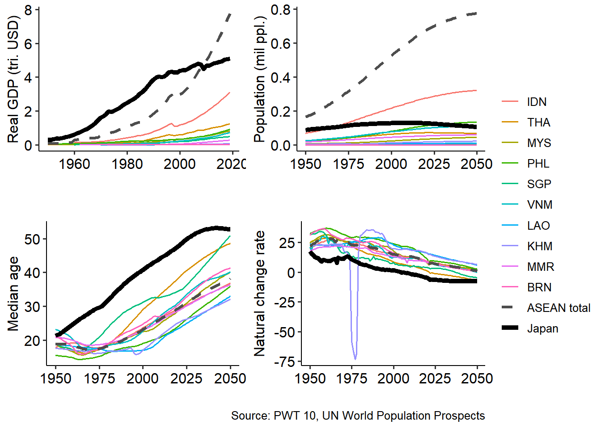
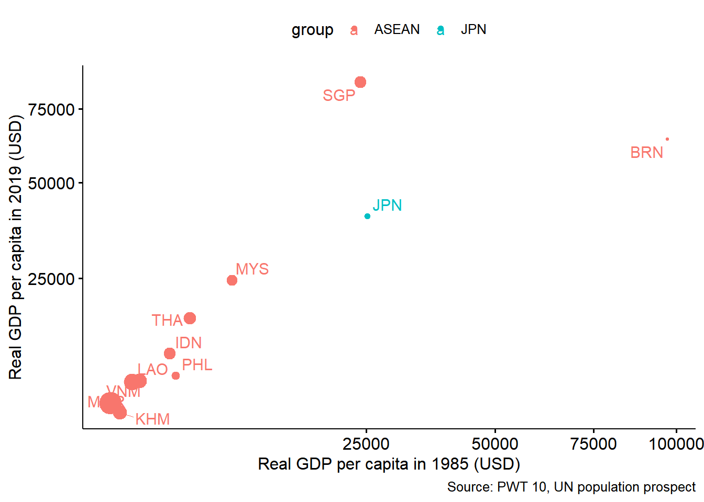
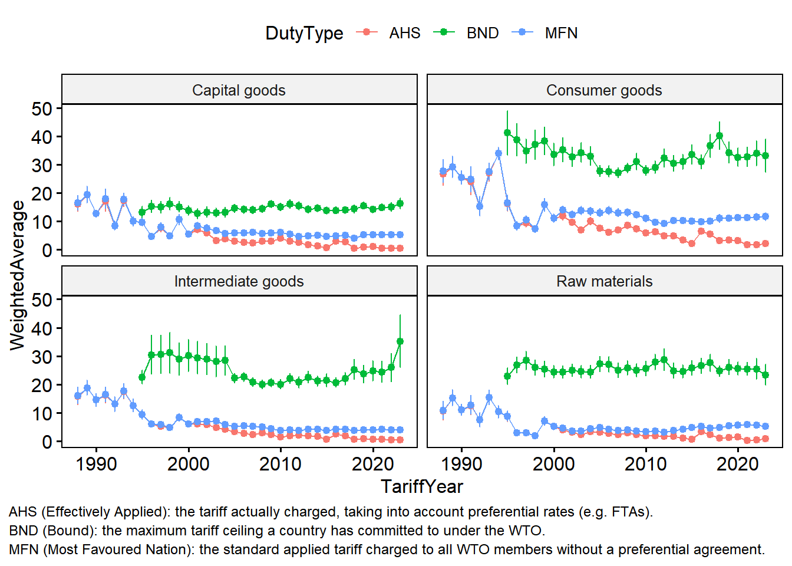
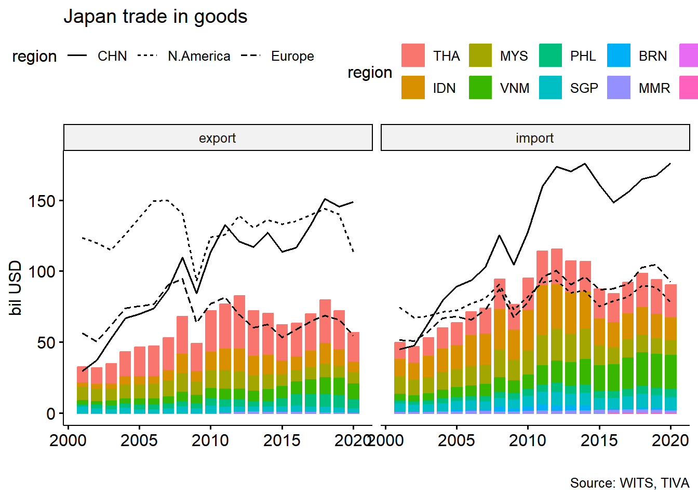
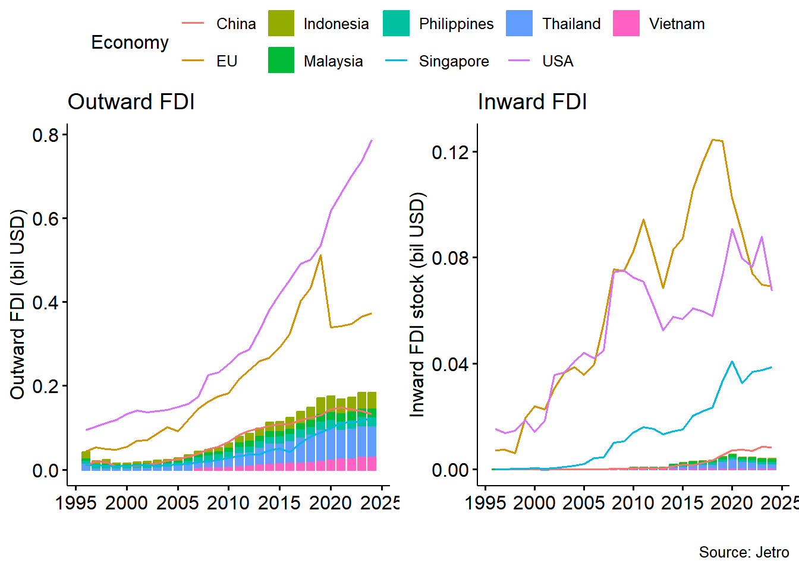
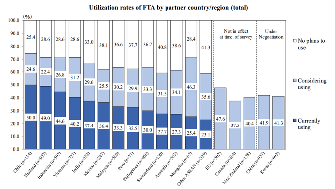
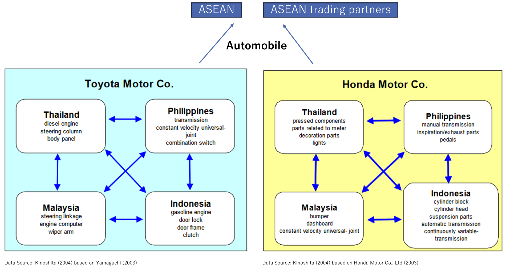
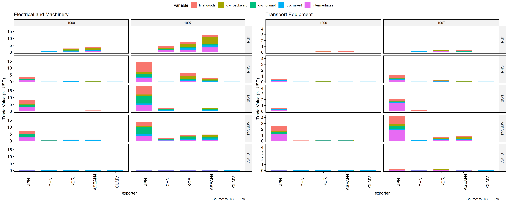
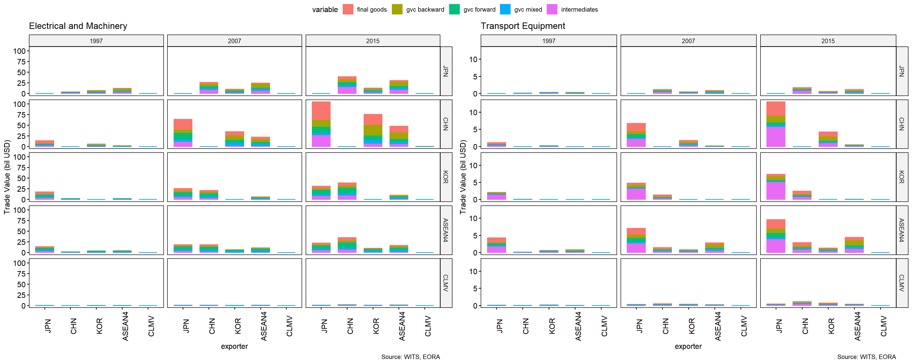
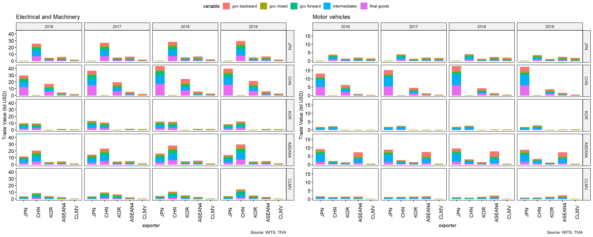

ASEAN and Regional Integration
2026-10-20
Introduction
- About ASEAN
- ASEAN Economic Integration
- ASEAN and Japan
ASEAN at a glance

ASEAN Diversity (1)
Established in 1967 by the original five members: Indonesia, Malaysia, Philippines, Singapore and Thailand (ASEAN5)
Others joined in 1984 and 1990s
- Timor-Leste as observer since 2022, formal affirmed in October 2025.
ASEAN Charter effective since 2008, aiming for ASEAN Community
With the principle of “non-intervention”, ASEAN has never aspired to be a European Union
ASEAN Diversity (2)

ASEAN Economic Integration (1)
In the 1970s: ASEAN5 pursued an import substitution industrialization strategy with prohibitively high tariffs
In the 1980s: ASEAN5 moved toward an export-oriented industrialization strategy
Brand to Brand Complementation (BBC) in 1988:
- reduced tariffs on auto parts by 50% in intra-firm trade in the ASEAN region
- proposed by Mitsubishi Motors but also used by other Japanese automobile manufacturers
ASEAN Economic Integration (2a)
- In 1990s: full-scale trade liberalization
- ASEAN Industrial Cooperation (AICO) in 1996
- cover items other than automobile parts
- tariff of 0–5% to intra-company trade
- used mostly by Japanese companies in the automobile and electric industry
ASEAN Economic Integration (2b)
- ASEAN Free Trade Area (AFTA) effective in 1992:
- all member states will join the ASEAN Free Trade Area (AFTA) within 15 years
- Common Effective Preferential Tariff (CEPT) regulates tariff reduction methods, rules of origin
- CEPT by 2007, 99% tariff lines
- Zero for ASEAN6
- Less than 5% for CLMV
ASEAN Economic Integration (3)
- Trade in Goods Agreement (ATIGA) in 2008:
- Eliminate tariffs for both ASEAN6 and CLMV by 2017
- Reduce non-tariff measures (NTM), such as technical standards and customs procedures
- ASEAN Economic Community established in 2015, then revised with AEC Blueprint 2025
- for free movement of goods, services, investment, and skilled labor, and freer movement of capital
- neither set common tariffs outside the region nor aim for a single currency
ASEAN intra-region tariff

Trade

Investment

Japanese firms in ASEAN countries
Japanese firms in ASEAN countries (1a)
- Japanese companies heavily used ASEAN economic integration
- goods between Japan and FTA partners
- intermediate goods among ASEAN countries

Source: https://www.jetro.go.jp/ext_images/en/reports/survey/pdf/jafirms2018.pdf
Japanese firms in ASEAN countries (1b)
- In 1990s, reorganize production systems in ASEAN region
- Japan adopt a strategy of concentrating production of similar products in a single country to attain economies of scale

Japanese Autos by 1990s Source: Kinoshita (2004) based on Yamaguchi (2003), Honda Motor Co., Ltd (2003)
Japanese Firms in ASEAN countries (1c)
- By 2000, Japanese firms have become high profile investors in ASEAN5

Japanese Firms in ASEAN countries (2a)
- Events in late 1990s and early 2000s encourage Japanese firms to expand to both ASEAN and China
- Asian financial crisis in 1997
- CLMV’s joining ASEAN in late 1990s
- China’s accession to the WTO in 2005
Japanese Firms in ASEAN countries (2b)
- Shift of assembly type operations from ASEAN to China to utilize low-cost labor:
- Japan imports more finished goods shift from China
- ASEAN5 and Japan’s export of components to China increase
- Continuous shift of production lines from Japan to ASEAN, such as color TVs, VTR, DVD players

Japanese Firms in ASEAN countries (3)
- “China plus one” strategy
- Shift from China to CLMV for labor-intensive production
- Chinese economic growth resulting in wage increase
- US-China Tariff War started in 2017

Key takeaways
- ASEAN integrates pragmatically through trade and production networks, not through a supranational union.
- Japanese firms helped build, and continue to reshape, ASEAN’s regional value chains.
- Tariffs are mostly eliminated for many ASEAN countries, so future gains depend on non-tariff barriers, diversification, and managing member diversity.
References
- Abiad, A., Baris, K., Barnabe, J. A., Bertulfo, and others (2018). The Impact of Trade Conflict on Developing Asia. Asian Development Bank.
- Ishikawa, K. (2021). The ASEAN Economic Community and ASEAN economic integration. Journal of Contemporary East Asia Studies, 10(1), 24–41.
- Kinoshita, T., Kishida, H., & Amemiya, A. (2004). Strategy of Japanese manufacturers in ASEAN and China in light of emerging FTA initiatives.
- Narine, S. (2008). Forty years of ASEAN: A historical review. The Pacific Review, 21(4), 411–429.
- Okabe, M., & Urata, S. (2014). The impact of AFTA on intra-AFTA trade. Journal of Asian Economics, 35, 12–31.
- Suvannaphakdy, S., & Pham, T. P. T. (2023). GVC Reconfiguration. ISEAS–Yusof Ishak Institute Singapore.
- Todo, Y., & Inoue, H. (2021). Geographic Diversification of the Supply Chains of Japanese Firms. Asian Economic Policy Review, 16(2), 304–322.